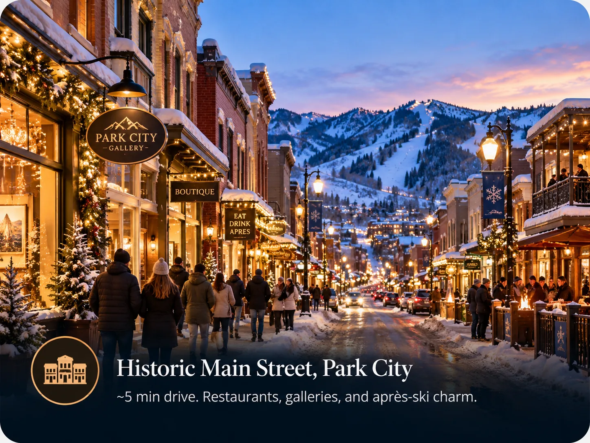
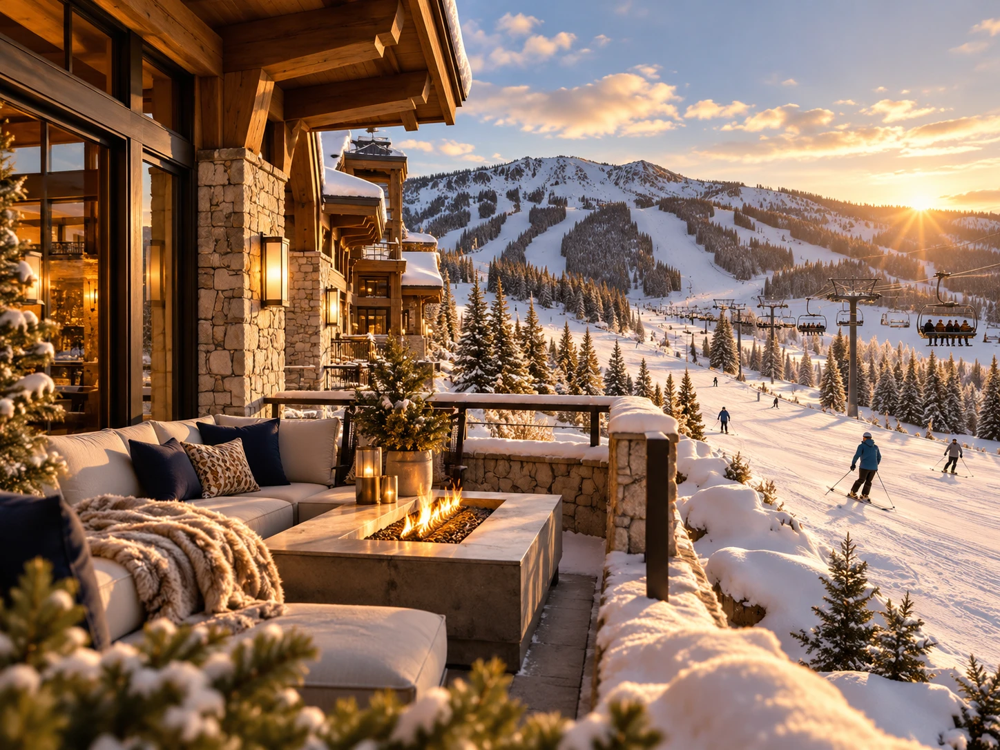

A listing that says only "Park City" has told you almost nothing. The resort has two base areas roughly ten minutes apart, and they suit completely different trips. This is the thing to settle before you compare prices.

Park City Mountain Resort is the largest ski resort in the United States by skiable acreage, and it got that way by joining two mountains that used to be separate businesses. The join is why there are two bases.
One lift ticket covers everything. On snow you can ride between the two sides freely. The decision is not about where you ski, it is about where you sleep, eat and park.
The Park City base
The original side sits at the bottom of Main Street, which has been a working town since the silver mining days and looks it. Bars, restaurants, galleries and shops run the length of the street, and the lifts start at the end of it.
If what you want from a ski holiday includes walking to dinner, having a drink without arranging a lift home, and a town with some history to it, this is the side that gives you that.
The cost is that the lodging near the base is mostly hotels and smaller condos, and the genuinely ski-in options are limited and expensive. A lot of what is sold as Main Street lodging involves a bus or a drive at the start and end of each day.
Canyons Village
The other base was built as a ski village rather than grown as a town. Everything sits around the bottom of the Red Pine Gondola, and the buildings are mostly lodging, with restaurants and rental shops underneath them.
It is quieter in the evenings and it has less character, and both of those are the point for some families. The trade is that the walk to a lift is short from most of the village, there is more lodging that sleeps six or eight in one unit, and nobody is driving anywhere at eight in the morning.

Comparing them honestly
| Canyons Village | Park City base | |
|---|---|---|
| Built as | A purpose-built ski village | A silver mining town that kept going |
| Main lift | Red Pine Gondola | Lifts at the bottom of Main Street |
| Evenings | Eat in, or drive ten minutes to town | Walk out of the door into town |
| Ski-in lodging | Common, and more of it sleeps a family | Limited and expensive |
| Best for | Families who want to ski from the door | Groups who want the town as much as the snow |
| Weak point | Quiet at night | Most lodging needs a bus or a car |
How to actually decide
Ask what the trip is for. If the answer involves children, early starts and not wanting to move a car for a week, Canyons Village wins on logistics and it is not close. If the answer involves long dinners and a bar afterwards, the Park City base earns its higher price.
Families often split the difference by staying in Canyons Village and going into town for one or two evenings. That works well. The reverse, staying in town and commuting to ski each morning, is the version people complain about afterwards.
Find the street address of the specific unit, not the area name. Plenty of listings described as Park City are a fifteen minute drive from either base. The address tells you what the listing copy will not.
Common questions
Is one lift ticket valid at both Park City bases?
Yes. Park City Mountain Resort is a single resort with two base areas, and a lift ticket or Epic Pass covers the whole mountain. You can ride from one side to the other on snow.
How far apart are Canyons Village and the Park City base?
About ten minutes by road, and longer in holiday traffic. On snow they are connected, so most people travel between them by skiing rather than driving.
Which base is better for beginners?
Both have learning terrain and ski schools. Canyons Village tends to be easier logistically for families with small children because the walk to the lift is shorter and you can get back to the unit at lunchtime.
The villa this guide comes from
We own a Premier Two-Bedroom Villa inside Westgate Park City Resort, in Canyons Village. It is 1,100 square feet, two king bedrooms and two queen sleeper sofas, so it sleeps eight in one unit. Full kitchen with a centre island, two bathrooms, in-unit laundry, and a short walk to the Red Pine Gondola.
It is available for Presidents' Week 2027, 13 to 20 February, and we rent it ourselves rather than through an agency.